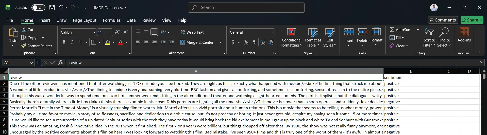
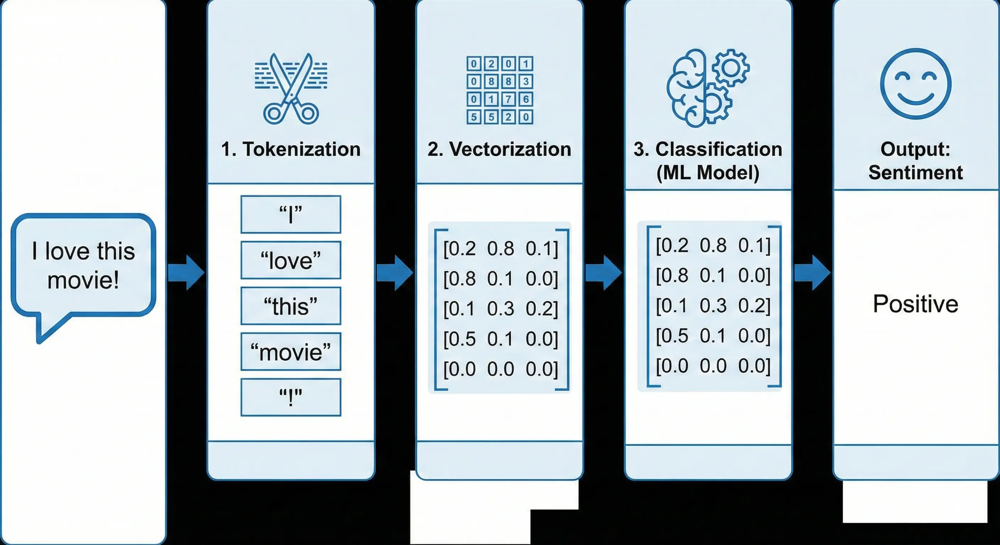
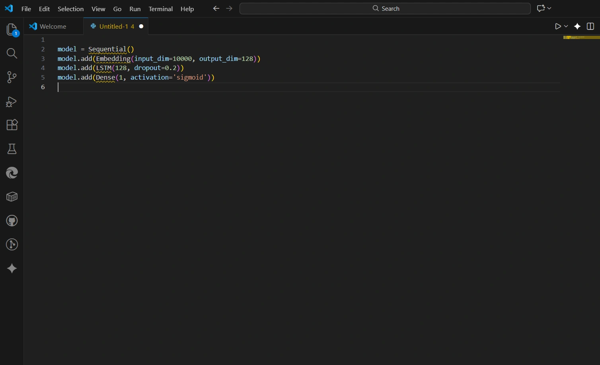

Project Concept
This project is my planned entry into the fascinating world of Natural Language Processing (NLP) and Machine Learning. The goal is to build and train a model that can understand the emotional tone behind a piece of text. By analyzing user reviews, social media comments, or any other text data, the AI will classify the sentiment as positive, negative, or neutral. This is a foundational task in AI with vast real-world applications.
The Vision: Decoding Emotion in Text
Humans can effortlessly detect sarcasm, joy, or anger in text. For a machine, this is an incredibly complex task. This project aims to demystify that process by leveraging neural networks to recognize patterns in language that correspond to different sentiments. The ultimate vision is to create a simple, accessible tool that anyone can use to gauge the sentiment of a piece of text.
Planned Methodology: A Step-by-Step Approach
-
1. Data Collection: The project will start with a well-known public dataset, such as the IMDB movie reviews dataset, which contains thousands of labeled positive and negative reviews. This provides the "ground truth" needed to train the model.

The Raw Material: A preview of the labeled IMDB dataset ready for training. - 2. Text Preprocessing: Raw text is messy. This crucial step involves cleaning the data by converting it to lowercase, removing punctuation and "stopwords" (common words like "the," "is," "a"), and performing tokenization (splitting text into individual words or tokens).
-
3. Vectorization: Machines don't understand words; they understand numbers. The preprocessed text will be converted into numerical vectors using techniques like TF-IDF or word embeddings (e.g., Word2Vec, GloVe).
To bridge the gap between human language and machine understanding, the data flows through a specific pipeline:

The NLP Pipeline: Transforming raw text into actionable sentiment scores. - 4. Model Selection and Training: The initial plan is to implement a Recurrent Neural Network (RNN), specifically an LSTM (Long Short-Term Memory) network, which is well-suited for sequence data like text. The model will be built using TensorFlow and Keras. As a stretch goal, I plan to experiment with a pre-trained Transformer model like BERT for transfer learning, which often yields state-of-the-art results.
- 5. Evaluation: The model's performance will be evaluated using metrics like accuracy, precision, recall, and the F1-score to understand how well it classifies each sentiment.

The Technology Stack
- Python: The de-facto language for machine learning.
- TensorFlow & Keras: For building and training the neural network.
- Scikit-learn: For data splitting, preprocessing, and performance evaluation.
- NLTK / SpaCy: Powerful libraries for NLP tasks like tokenization and stop-word removal.
- Flask/FastAPI (for deployment): To wrap the trained model in a simple API.
Potential Applications and Impact
The skills and model developed in this project have direct applications in many industries. Businesses can use it to analyze customer feedback from surveys and social media to quickly gauge public opinion. It can be used to filter toxic comments, track brand reputation, or even analyze financial news for market sentiment. The ultimate goal is to deploy this model as a simple web API, making this powerful technology accessible for anyone to try in real-time.
Note: This project is currently in the planning phase. The code snippets and visualizations presented above are conceptual illustrations generated to demonstrate the planned architecture and logic. Some images used in this presentation were generated with AI assistance to represent the final vision.